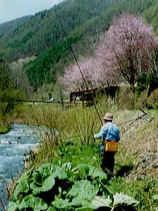
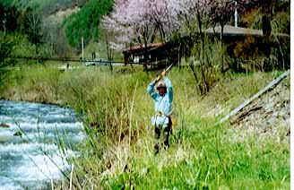
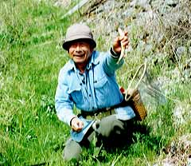
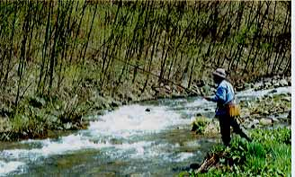

Photo Gallery
Comeback from a cerebral infarction

In September of 1992, my father had a cerebral infarction with his brain. After that, he had to take some medical treatments for a half year. Having done them, I took him to a small village to enjoy fishing. My father is a master of "Amago" fishing. This little stream is in Nagawa village in Nagano prefecture. It was a calm spring day. How would be today's fishing?

Mmm? Oh! Strike! He tried to land the fish with his clumsy hands.

Oh! You've got the fish finally! It was a good size "Iwana", Japanese char, wasn't it? He held the fish with his left hand because his right hand did not function enough. I was deeply impressed by my father's great skill to fish.

The wind was still cold. The mountain, the river and we were looking forward to the arriving of spring. Let's go to the next pool.
Photo Gallery Contents
Home